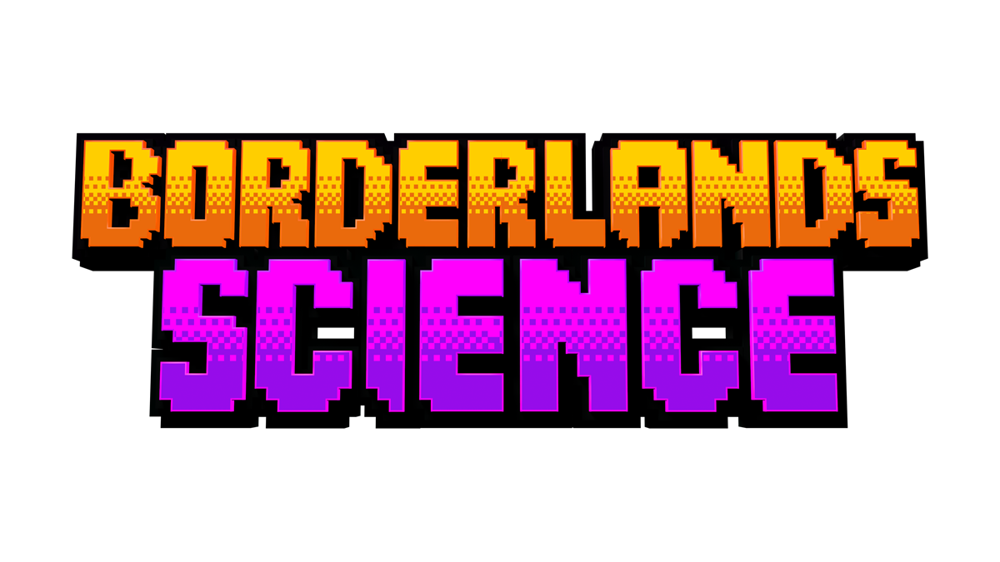
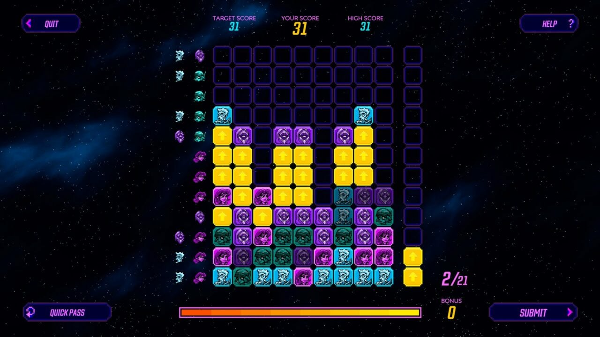

PhD · Bioinformatics · AI · Citizen Science
I am a PhD candidate in Computer Science at McGill University, working primarily in bioinformatics. My main research interests are computational biology, artificial intelligence, and citizen science games.
I am completing my doctorate under the supervision of Jérôme Waldispühl. I previously earned my BSc in Computer Engineering from Sharif University of Technology.
My bioinformatics research focuses on integrating algorithmic and statistical models with human-computer interaction. In particular, I study how large-scale human participation can inform and improve computational pipelines, such as those used for microbial phylogeny reconstruction.
My citizen science work centers on the development and analysis of gamified systems for biological data. One of my core projects, Borderlands Science, is a puzzle game embedded within Borderlands 3. This platform has collected over 130 million puzzle solutions from 4 million players and was recently featured in Nature Biotechnology.
Email: parham.ghasemloogheidari [at] mail [dot] mcgill [dot] ca
Location: Montreal, QC, Canada
 